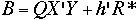
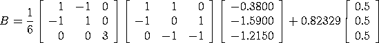
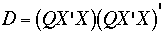
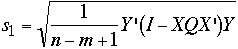
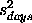
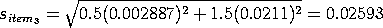

2.
Measurement Process Characterization
2.3.
Calibration
2.3.3.
Calibration designs
2.3.3.2.
General solutions to calibration designs
2.3.3.2.1.
|
General matrix solutions to calibration designs
|
|
|
Requirements
|
Solutions for all designs that are cataloged in this Handbook are
included with the designs. Solutions for other designs can be
computed from the instructions below given some familiarity with
matrices. The matrix manipulations that are required for the
calculations are:
- transposition (indicated by ')
- multiplication
- inversion
|
|
Notation
|
- n = number of difference measurements
- m = number of artifacts
- (n - m + 1) = degrees of freedom
- X= (nxm) design matrix
- r'= (mx1) vector identifying
the restraint
-
= (mx1) vector identifying ith item
of interest consisting of a 1 in the ith position
and zeros elsewhere
- R*= value of the reference standard
- Y= (mx1) vector of observed
difference measurements
|
|
Convention for showing the measurement sequence
|
The convention for showing the measurement sequence is illustrated with
the three measurements that make up a 1,1,1
design for 1 reference standard, 1 check standard, and 1 test item.
Nominal values are underlined in the first line .
1 1 1
Y(1) = + -
Y(2) = + -
Y(3) = + -
|
|
Matrix algebra for solving a design
|
The (mxn) design matrix X is
constructed by replacing the pluses (+), minues (-) and blanks with
the entries 1, -1, and 0 respectively.
The (mxm) matrix of normal equations,
X'X, is formed and augmented by the
restraint vector to form an (m+1)x(m+1)
matrix, A:
|
|
Inverse of design matrix
|
The A matrix is inverted and shown in the
form:
where Q is an mxm matrix
that, when multiplied by s2, yields the usual
variance-covariance matrix.
|
|
Estimates of values of individual artifacts
|
The least-squares estimates for the values of the individual artifacts
are contained in the (mx1) matrix,
B, where

where Q is the upper left element of the
A-1
matrix shown above. The structure of the individual estimates is
contained in the
QX' matrix; i.e. the estimate for the
ith item can be computed from
XQ and
Y by
- Cross multiplying the ith column of
XQ with
Y
- And adding
R*(nominal test)/(nominal restraint)
|
|
Clarify with an example
|
We will clarify the above discussion with an example from the mass
calibration process at NIST. In this example, two NIST kilograms are
compared with a customer's unknown kilogram.
The design matrix, X, is
The first two columns represent the two NIST kilograms while the third
column represents the customers kilogram (i.e., the kilogram being
calibrated).
The measurements obtained, i.e., the Y matrix, are
The measurements are the differences between two measurements, as
specified by the design matrix, measured in grams. That is,
Y(1) is the difference in measurement between NIST kilogram
one and NIST kilogram two, Y(2) is the difference in
measurement between NIST kilogram one and the customer kilogram,
and Y(3) is the difference in measurement between NIST
kilogram two and the customer kilogram.
The value of the reference standard,
R*, is
0.82329.
Then
If there are three weights with known values for weights one and
two, then
Thus
and so
From A-1, we have
We then compute QX'
We then compute
B = QX'Y + h'R*

This yields the following least-squares coefficient estimates:
|
|
Standard deviations of estimates
|
The standard deviation for the
ith item is:

where

The process standard deviation, which is a measure of the overall
precision of the (NIST) mass calibrarion process,

is the residual standard deviation from the design, and
sdays is the standard deviation
for days, which can only be estimated from
check standard measurements.
|
|
Example
|
We continue the example started above. Since n = 3 and
m = 3, the formula reduces to:
Substituting the values shown above for X,
Y, and
Q results in
and
Y'(I - XQX')Y =
0.0000083333
Finally, taking the square root gives
The next step is to compute the standard deviation of item 3
(the customers kilogram), that is sitem3.
We start by substitituting the values for X
and Q and
computing D
Next, we substitute
= [0 0 1] and
 =
0.021112 (this value is taken from a check standard
and not computed from the values given in this example).
We obtain the following computations
and
and

|